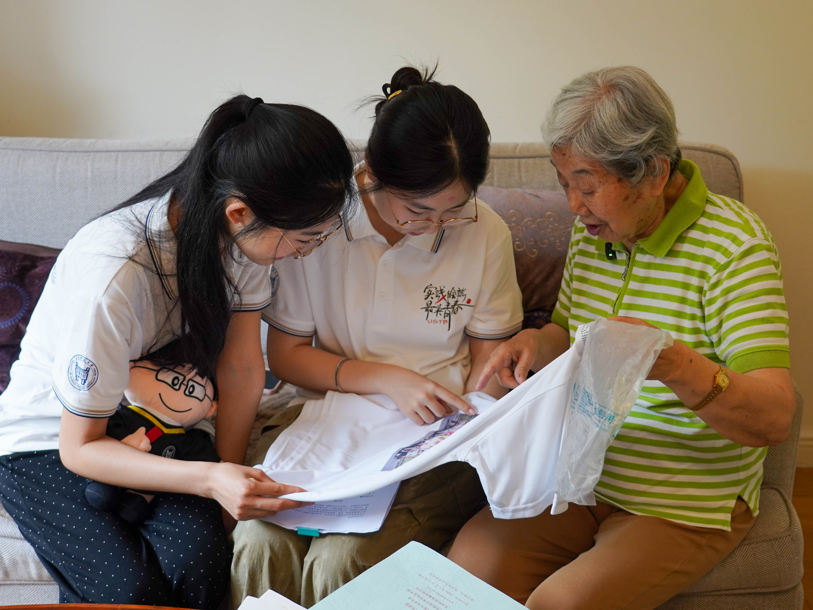
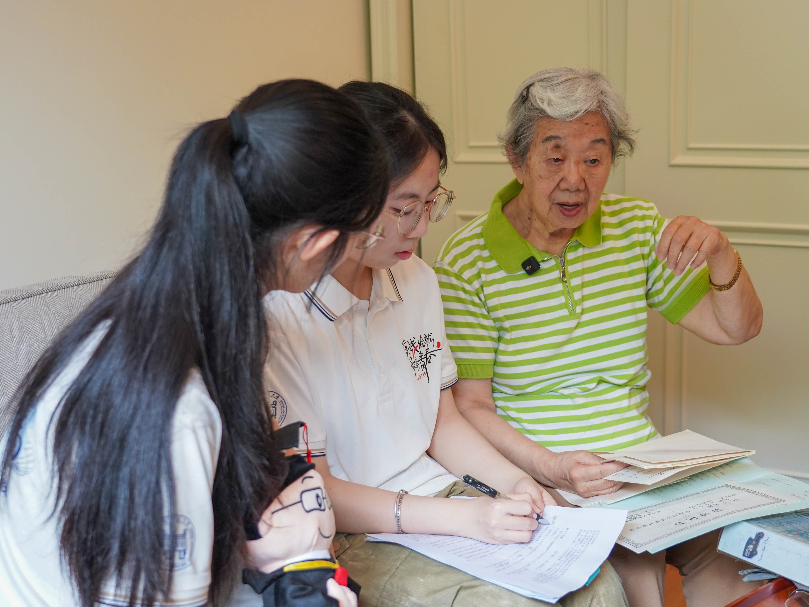
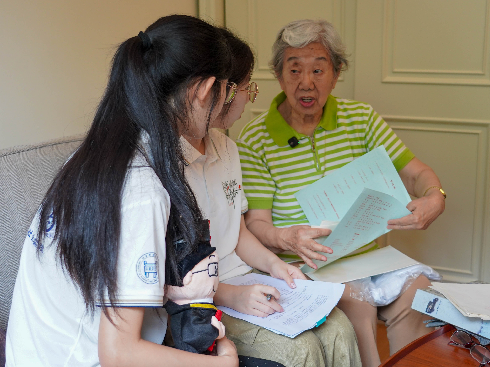

Q-01 · 访谈 · 7月26日
口述
问 · 柴静悠您是天津大学毕业，当年为什么选择来北京钢铁学院任教？
我是服从分配。1960 年毕业时，大部分同学都想去工厂，我当时想填报洛阳轴承厂。朋友们劝我——父亲在清华任教，家就在北京，帮我改填了北京钢铁学院，我就直接拉着行李、骑自行车到校报到。
陈力
受访人 · 口述
TJU-1960 天津大学 1960 届 · 自动化 · 电工基础 · 十三载班主任
做老师是很幸福的事。 —— 陈力



我是服从分配。1960 年毕业时，大部分同学都想去工厂，我当时想填报洛阳轴承厂。朋友们劝我——父亲在清华任教，家就在北京，帮我改填了北京钢铁学院，我就直接拉着行李、骑自行车到校报到。
我隶属自动化系电工基础教研室。教研室主任是天大校友，看中我在校成绩优异，就让我跳过农村锻炼环节直接留校任教。从助教起步，逐步晋升讲师、副教授、教授，主讲电工技术、电子技术两门基础课。和专业课不同，没有那么多论文，授课、实验、习题批改都一人带，和学生接触紧密，反响很好，便安排我担任班主任。
先后带三届班级：仪表 89 班，带三年；自动化电 901、电 902 两个班，完整带四年；临近退休，柯俊院士创办材料 963 试点班，指定我担任班主任，退休后带班直至学生毕业。我除了搞基础课，还和电化教研室一起搞电化教学片，教学就丰富一点。十三年的班主任经历，先后获得各级优秀班主任证书，还拿到优秀班主任专项奖励。
2000 年学校两百届毕业生，团委、学生会发起全校学生投票，评选“学生心目中最优秀十位教师”，我成功入选。毕业晚会专门发放邀请函，十大教师照片在校内十字路口橱窗长期展示，晚会现场公开表彰。这份荣誉我一直留着，邀请函、晚会节目单、荣誉证书全套资料都在。
电 902 班毕业时拿全班定制纪念 T 恤送我，印着 “四载同窗，二十年后再会”，我都没敢穿，一直妥善保存，愿意捐赠给校史存档，未来放进雄安新校区校史馆。
还有材料 963 班毕业纪念册，附上照片与亲笔留言。前不久八位年过五十的毕业生专程组团来探望，翻看纪念册十分感慨。其中一名学生幼年丧母，事业有成后重逢，说“看到我就像看到母亲一样”，很感动。请他们在食堂用餐，带他们参观养老社区生活——做老师是很幸福的事。这份纪念册我可以捐赠给学校，优秀教师评选全套纸质资料你们可以拍照留存，原件我还想留下做纪念。
最重要的一点，一定要不断地丰富自己。我自己也感到现在比较落后了，好多新东西得重新去学。
另外，跟同学的关系很重要——上课那么多人爱听你的课，和人家很凑合地在那儿听，是完全不一样的，要互相有交流。所以我都是准时上课、准时下课，别拖堂，自己准备要比较充分。还要能吸引他：内容他书本上能知道很多，但你要能很生动地把它讲出来。有些同学说“老师，我们挺喜欢听你的声音的”。
我觉得，一定要不断地丰富自己。
核心是创新。教师持续更新教学方法、学生不断探索新技术，才能办好教育、让学生有广阔发展前景。
我的外孙女在美国密歇根大学攻读计算机研究生，专业更新速度极快，不持续学习就很容易落后。我有两个女儿、三位外孙女，晚辈都很孝顺。他们不在身边，我们入住养老社区，他们更放心些，社区配备紧急呼叫拉绳，也有智能助手，几分钟就有工作人员赶来，就医配套也很完善。